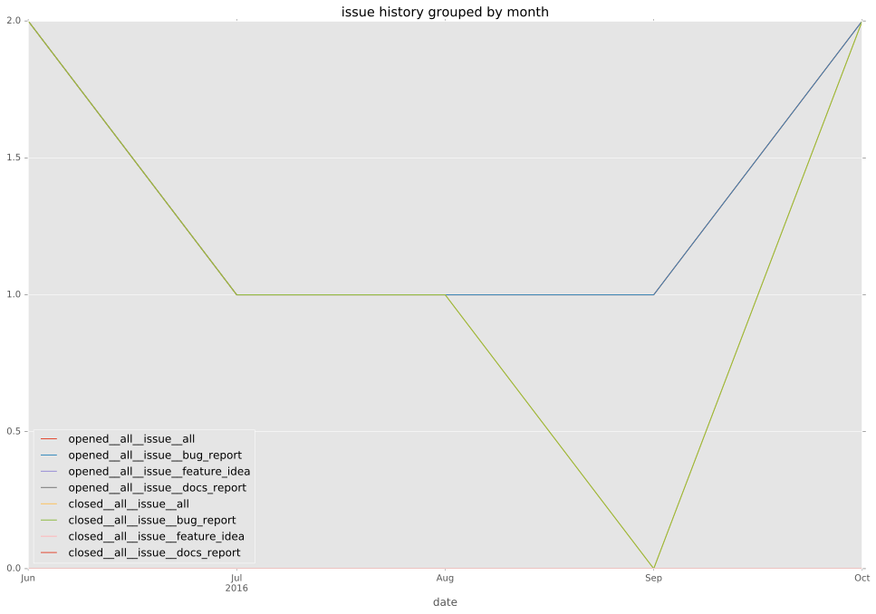
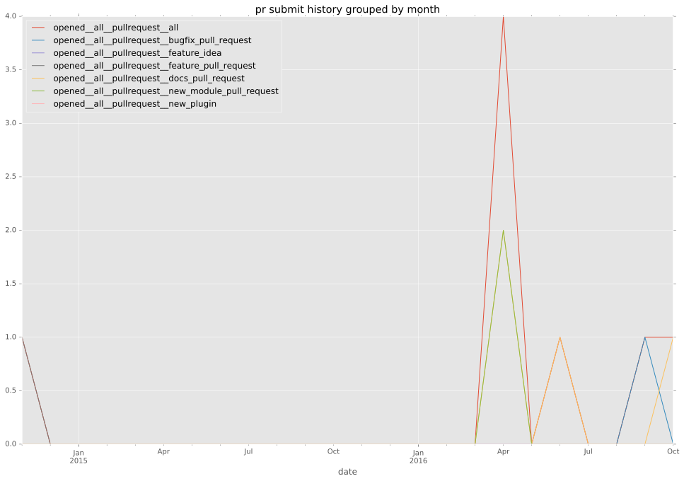
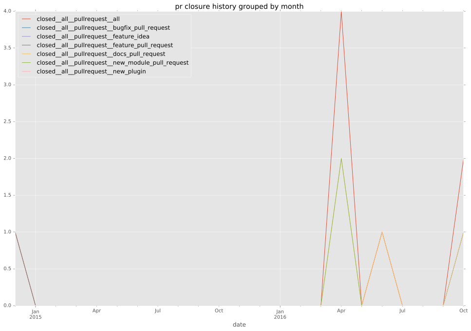

authors
- devigned
- lmazuel
- obsoleted
maintainers
contributors
- trondhindenes : 1 commits
- ypid : 1 commits
- lmazuel : 1 commits
- resmo : 3 commits
- nitzmahone : 4 commits
- chouseknecht : 25 commits
total issue counts
pullrequest: 9
docs pull request: 3
bugfix pull request: 4
issue: 7
new plugin: 2
bug report: 7
issue history

pullrequest history


days open by issue type
all
count: 15
std: 3.14415557594
min: 0
max: 9
median: 0.0
mean: 1.8
pullrequest
count: 0
std: nan
min: nan
max: nan
median: nan
mean: nan
docs pull request
count: 4
std: 0.0
min: 0
max: 0
median: 0.0
mean: 0.0
bugfix pull request
count: 4
std: 5.19615242271
min: 0
max: 9
median: 4.5
mean: 4.5
issue
count: 0
std: nan
min: nan
max: nan
median: nan
mean: nan
new plugin
count: 3
std: 1.15470053838
min: 2
max: 4
median: 2.0
mean: 2.66666666667
bug report
count: 4
std: 0.5
min: 0
max: 1
median: 0.0
mean: 0.25
closures grouped by total days open